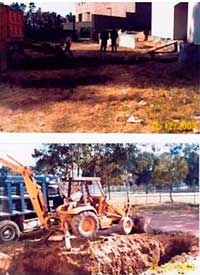
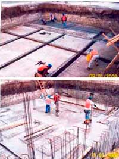
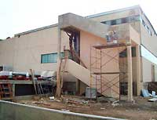

- 2006 Investigadores de la ESFM y ESIME presentan varias propuestas independientes para crear:
Laboratorios de caracterización (microscopía electrónica).
Laboratorios de nanomateriales.
Laboratorio de MEMS.
- 2007 Un grupo de investigadores de diferentes Unidades académicas, convocados y coordinados por la SIP, elaboran la propuesta para crear el Centro de Nanociencias y Micro-Nanotecnología con Laboratorios de Caracterización y MEMS
- 2008 Por instrucciones del entonces Director General del IPN, Dr. Enrique Villa Rivera, da inicio la construcción de 2 naves para albergar los Laboratorios.
- 2009 Se llevan a cabo trabajos de construcción interna y equipamiento del Laboratorio de Caracterización. Asimismo, se inicia la construcción de salas limpias y equipamiento (1ªetapa) del Laboratorio de Micro-Nanotecnología.
- 31 de marzo de 2009 El entonces Director General del IPN, Dr. Enrique Villa Rivera, firma el Acuerdo por el que se reforma el diverso que creó la Unidad de Apoyo a la Investigación en Nanociencias y Micro-nanotecnologías, que se transforma en el Centro de Nanociencias y Micro y Nanotecnologías, donde destaca el considerando de:
[…] un Centro de Nanociencias y Micro y Nanotecnologías permitirá al Instituto fortalecer e impulsar el desarrollo de la investigación y la transferencia de tecnología, a través de la cooperación, complementariedad interdisciplinaria y movilidad intrainstitucional de investigadores.
(Publicado en el Número Extraordinario 730 de la Gaceta Politécnica, con fecha 14 de mayo de 2009). Click aqui para ver la información completa.
- 29 de mayo de 2009 En el marco de la Octava Sesión Ordinaria del Consejo General Consultivo, se dio a conocer la designación del Dr. José Gerardo Cabañas Moreno como director del Centro de Nanociencias y Micro y Nanotecnologías del IPN. (Publicado en el Número 734 la Gaceta Politécnica, con fecha del 2 de junio de 2009).
- 26 de octubre de 2009 Se lleva a cabo la ceremonia de inauguración de las nuevas instalaciones del Centro de Nanociencias y Micro y Nanotecnologías, en la cual participaron, entre otras personalidades, el Dr. Enrique Villa Rivera, Director General del IPN en turno, el Dr. Jean Charles Guibert, Director del Campo de Innovación para la Micro y Nanotecnologías de Grenoble, Francia y la Dra, Esther Orozco Orozco, entonces Directora del Instituto de Ciencia y Tecnología del Distrito Federal, así como el Dr. José Gerardo Cabañas Moreno, Director del nuevo Centro de Nanociencias y Micro y Nanotecnologías. Como invitados especiales estuvieron presentes un gran número de miembros de la Red de Nanociencias y Micro-Nanotecnologías del IPN. (Publicado en el Número 756 de la Gaceta Politécnicel ha 27 de octubre de 2009).
| |
|  |
| |
| |
|
|
|